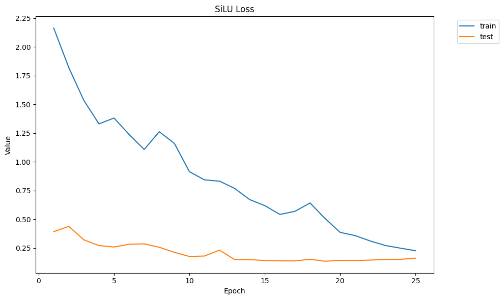
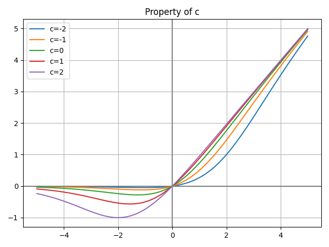
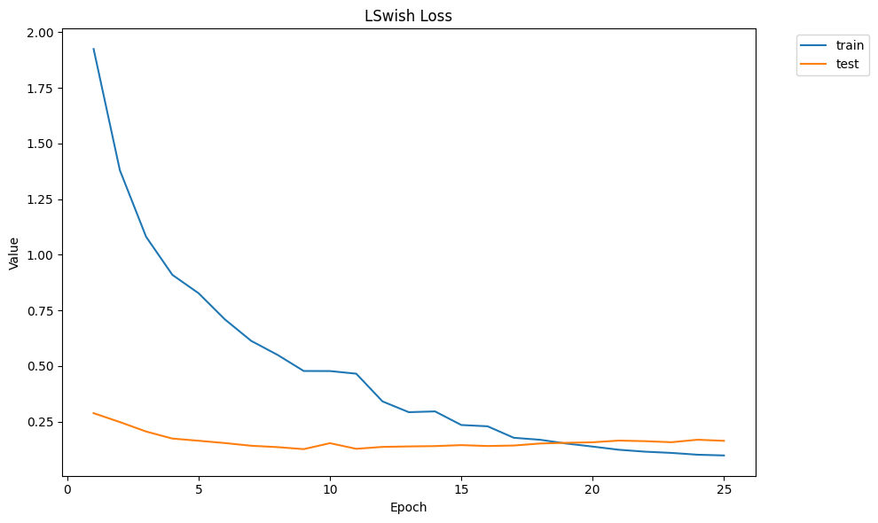
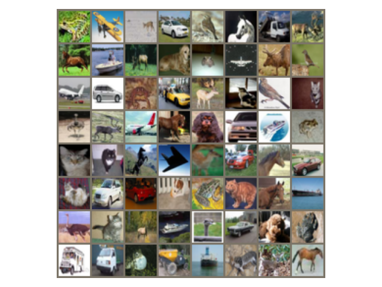
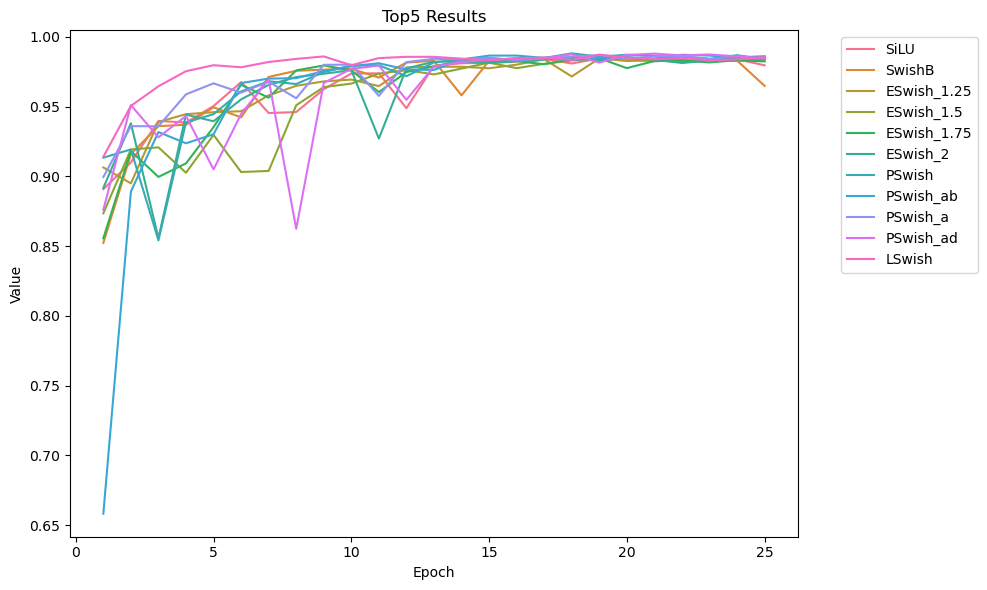
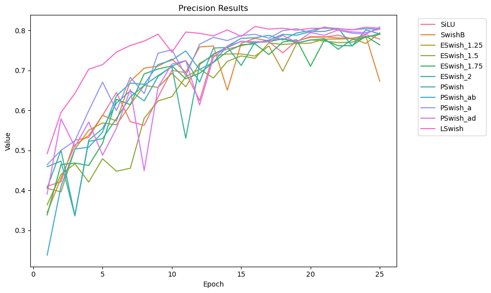

Context
Activation functions introduce the non-linearity that lets neural networks learn complex patterns. Swish-based activations were proposed as alternatives to ReLU, aiming to address dying neurons and vanishing gradients by keeping small negative values alive instead of clamping them to zero. This paper asks a narrow, testable question: among the Swish family, which variant actually earns its place on a real image-classification task?
Variants studied
Each variant was substituted into the same architecture so differences in performance could be attributed to the activation rather than the network.
- SiLU / Swish — smooth, non-monotonic self-gating baseline, x · σ(x).
- Swishβ — adds a learnable β inside the sigmoid to tune gradient flow.
- E-Swish — scales the output by β (tested at 1.25, 1.5, 1.75, 2) for faster early learning while keeping gradients stable.
- P-Swish — a piecewise parametric form with learnable α, β, δ, tested in four configurations (None, ab, a, ad).

L-Swish — our proposal
We proposed a parametric variant that adds a bias term inside the sigmoid gate. The hypothesis: bias lets the activation shift its gating threshold, allowing the model to move toward a minimum faster and generalize sooner.
L-Swish(x) = a · x · σ(bx + c)
The parameters a, b, and c are all learnable, initialized to 1, 1, and 0 respectively — so the function starts as standard Swish and departs from it only as training demands.


Setup
- Dataset: CIFAR-10 — 60,000 32×32 color images across 10 classes, split 50,000 train / 10,000 test.
- Preprocessing: normalization plus horizontal-flip augmentation to aid generalization.
- Architecture: ResNet-50 with its ReLU activations swapped for each variant under test.
- Training: 25 epochs, Adam at lr = 0.001, cross-entropy loss, repeated across multiple runs.
- Metrics: Top-1 and Top-5 accuracy, precision, recall, F1.

Results
P-Swish (a) took the top spot on nearly every metric, with L-Swish placing a close second across the board — and converging faster early in training, which is what the bias term was meant to buy.
| Activation | Top-1 | Top-5 | Prec. | Recall | F1 |
|---|---|---|---|---|---|
| Swish | 77.28 | 97.96 | 77.85 | 77.28 | 77.41 |
| Swishβ | 67.12 | 96.49 | 67.29 | 67.12 | 67.00 |
| E-Swish (β=1.25) | 78.94 | 98.34 | 79.41 | 78.94 | 79.07 |
| E-Swish (β=1.5) | 79.12 | 98.32 | 78.99 | 79.12 | 79.01 |
| E-Swish (β=1.75) | 76.34 | 98.24 | 76.39 | 76.34 | 76.25 |
| E-Swish (β=2) | 79.09 | 98.60 | 79.20 | 79.09 | 79.10 |
| P-Swish (None) | 79.37 | 98.40 | 79.12 | 79.37 | 79.11 |
| P-Swish (ab) | 80.16 | 98.59 | 80.29 | 80.16 | 80.17 |
| P-Swish (a) | 80.66 | 98.46 | 80.89 | 80.66 | 80.71 |
| P-Swish (ad) | 79.82 | 98.47 | 80.36 | 79.82 | 79.95 |
| L-Swish (ours) | 80.35 | 98.56 | 80.54 | 80.35 | 80.34 |
★ best result · all figures in percent


Conclusion
L-Swish outperformed several Swish variants on convergence speed, confirming that the sigmoid bias term does what we expected it to. But it was edged out by P-Swish on final metrics in almost every column — the loss plots suggest overfitting is the likely cause. The honest read is a partial result: the mechanism works, the regularization around it doesn't yet. That's the thread worth pulling next.